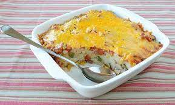

Pap Tert

Description
This is a traditional afrikaans Pap tert
Ingredients
Pap
Cream
Cheese
Bacon
Steps
Add a layer of Pap
Add a layer of bacon and mushrooms
Pour the cream over the Pap
Add a layer of cheese
Repeat Steps 1 to 4 until baking Dish is full